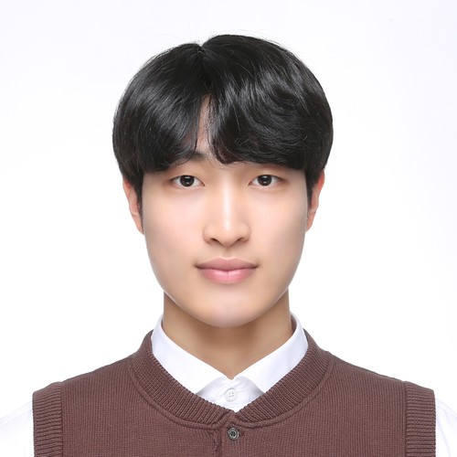

I am a research intern at the AI and Robotic Systems Lab at KAIST, advised by Woojun Kim. I am completing my B.S. at KAIST in Industrial and Systems Engineering with an AI Special Designated Major.
Previously, I was a research intern at the Data Intelligence System Lab, where I contributed to work on how language models use evidence in scientific writing. Alongside that, I ran my own projects on vision-language-action models and robot manipulation, which is what drew me toward robotics.
My research mainly focuses on vision-based robot navigation, with broader interests in vision-language-action models, robot manipulation, and multi-agent systems.
* denotes equal contribution · † denotes advising or corresponding author